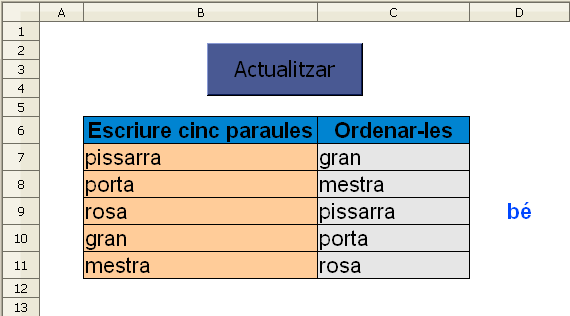
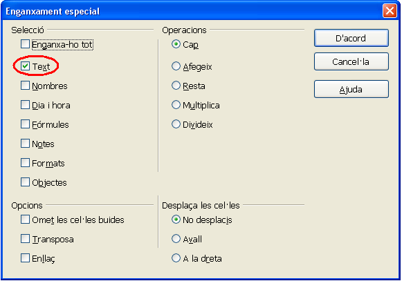

En aquesta activitat cada vegada que es faci clic a la macro "Actualitzar", es presentarà un nou llistat de paraules en les cel·les de color taronja les quals l'alumne haurà d'ordenar alfabèticament en les cel·les de
color gris. L'ordenació de les paraules s'haurà de fer sense que l'alumne faci servir l'opció d'ordenar paraules que ja inclou el calc.
Presentació gràfica de l'activitat

Funcions que es fan servir en aquesta activitat:
Objectiu de l'activitat:
L'objectiu d'aquesta activitat és la de treballar l'alfabet i donar suport en cercar paraules al diccionari.
Desenvolupament de l'activitat:
1. Obrir el fitxer M4 i canviar el nom del Full2 pel de M4P2 ordenar paraules.
2. Copiar el següent llistat de paraules a la cel·la C22:
porta
taula
cadira
llapis
goma
estoig
pissarra
bolígraf
carpeta
retolador
foli
full
guix
esborrador
finestra
porta
armari
clip
llibreta
llibre
blanc
negre
marró
rosa
blau
groc
lila
taronja
caminar
saltar
córrer
parlar
escoltar
cantar
alt
baix
gran
petit
escales
aula
mestra
jersei
camisa
sabates
jaqueta
bufanda
plat
cullera
forquilla
ganivet
En fer-ho, el llistat es veurà copiat a les cel·les del rang C22:C71
3. Escriure el número 1 a la cel·la B22 i estendre aquesta cel·la fins la cel·la B31. D'aquesta manera es farà un llistat de números de l'1 al
10. Aquesta operació caldrà repetir-la als rangs B32:B41, B42:B51, B52:B61 i B62:B71
4. Escriure a la cel·la B7: =CONSULTA(ALEATENTRE(1;10);B22:B31;C22:C31)
5. Escriure a la cel·la B8: =CONSULTA(ALEATENTRE(1;10);B32:B41;C32:C41)
6. Escriure a la cel·la B9: =CONSULTA(ALEATENTRE(1;10);B42:B51;C42:C51)
7. Escriure a la cel·la B10: =CONSULTA(ALEATENTRE(1;10);B52:B61;C52:C61)
8. Escriure a la cel·la B11: =CONSULTA(ALEATENTRE(1;10);B62:B71;C62:C71)
9. Escriure a la cel·la F6: paraules ordenades que serà la capçalera del rang B7:B11
10. Fer una macro anomeda "Actualitzar" amb les següents funcions:

11. Escriure a la cel·la F22: =C7&C8&C9&C10&C11
12. Escriure a la cel·la F23: =F7&F8&F9&F10&F11
13. Escriure a la cel·la D7: =SI(O(C7="";C8="";C9="";C10="";C11="");"";SI(F22=F23;"bé";"no"))
14. Fer que el format de l'activitat sigui semblant al gràfic de la presentació de la pràctica.
15. Protegir i ocultar les cel·les que convingui.
16. Comprovar que funcioni correctament l’activitat.
17. Desar el fitxer M4.